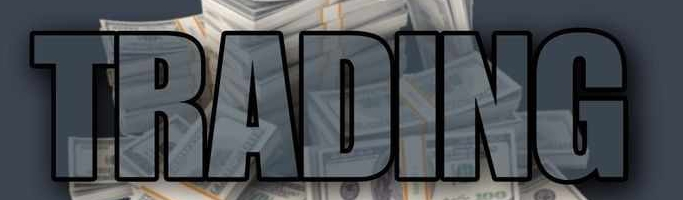
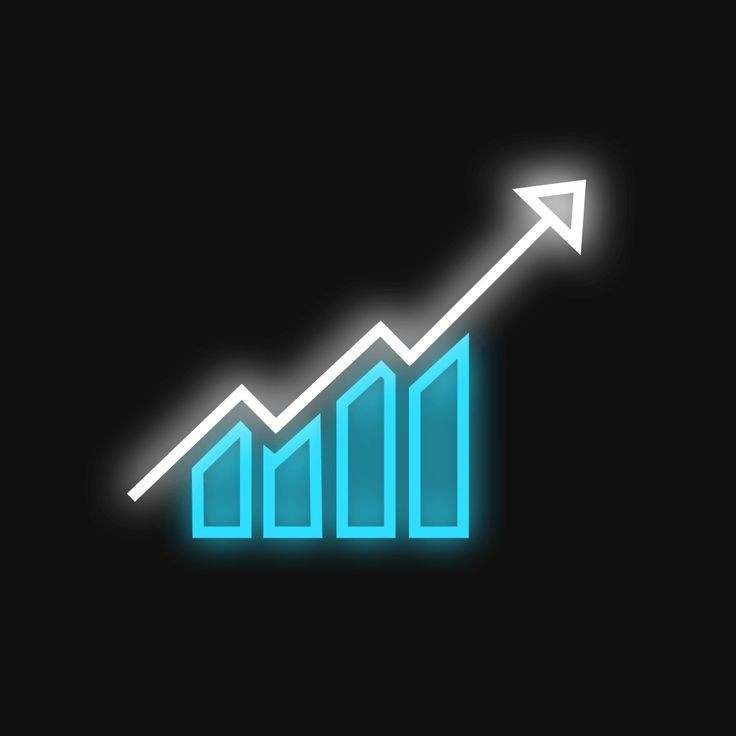
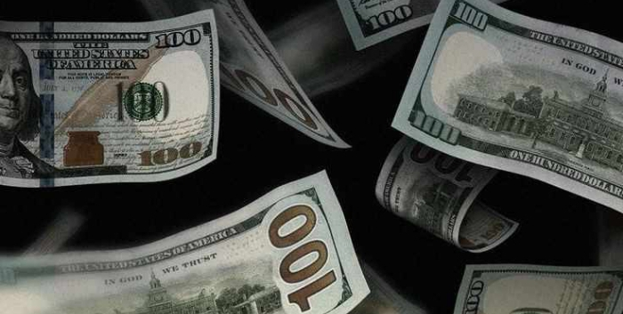

Forex trading involves buying and selling currencies in the global market to profit from exchange rate fluctuations. It's a decentralized market accessed through brokers. Traders analyze economic factors, events, and technical indicators to make trading decisions. Forex trading carries risks, so it's important to educate yourself, develop a strategy, and manage risk. Consider starting with a demo account and seeking guidance from experienced traders or professionals.

Forex trading, also known as foreign exchange trading, has a fascinating history that spans several centuries. Its origins can be traced back to the Middle Ages when international trade and commerce began to flourish. During this period, merchants and traders exchanged different currencies to facilitate cross-border transactions. However, it was not until the 19th century that a more structured system emerged. The establishment of the gold standard linked the value of currencies to a fixed amount of gold, creating a system of fixed exchange rates. This arrangement lasted until the early 20th century when the Bretton Woods system was introduced after World War II. Under this system, currencies were pegged to the U.S. dollar, which was in turn tied to gold. However, the Bretton Woods system eventually collapsed in the early 1970s, leading to the adoption of floating exchange rates. This shift allowed currencies to fluctuate freely based on market forces. Technological advancements in the 1970s and 1980s paved the way for electronic trading, enabling traders and financial institutions to conduct forex transactions electronically. The rise of the internet in the late 1990s and early 2000s further revolutionized forex trading, making it accessible to individual traders through online brokers. Today, forex trading is a prominent global market, attracting a diverse range of participants and offering opportunities for both institutional investors and retail traders. It continues to evolve with advancements in technology, serving as a vital component of the global financial landscape.

Design By Ks.W.Latt